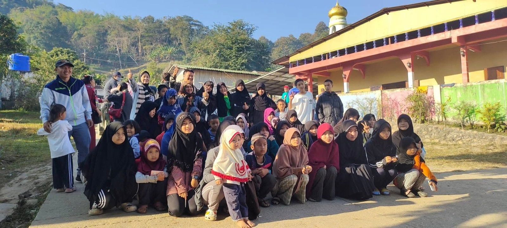
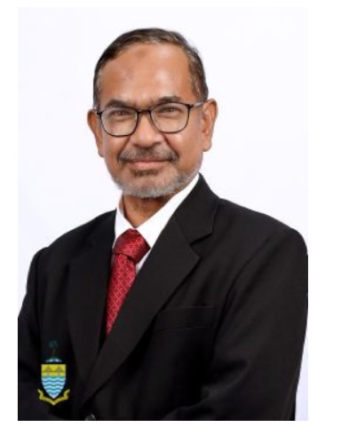
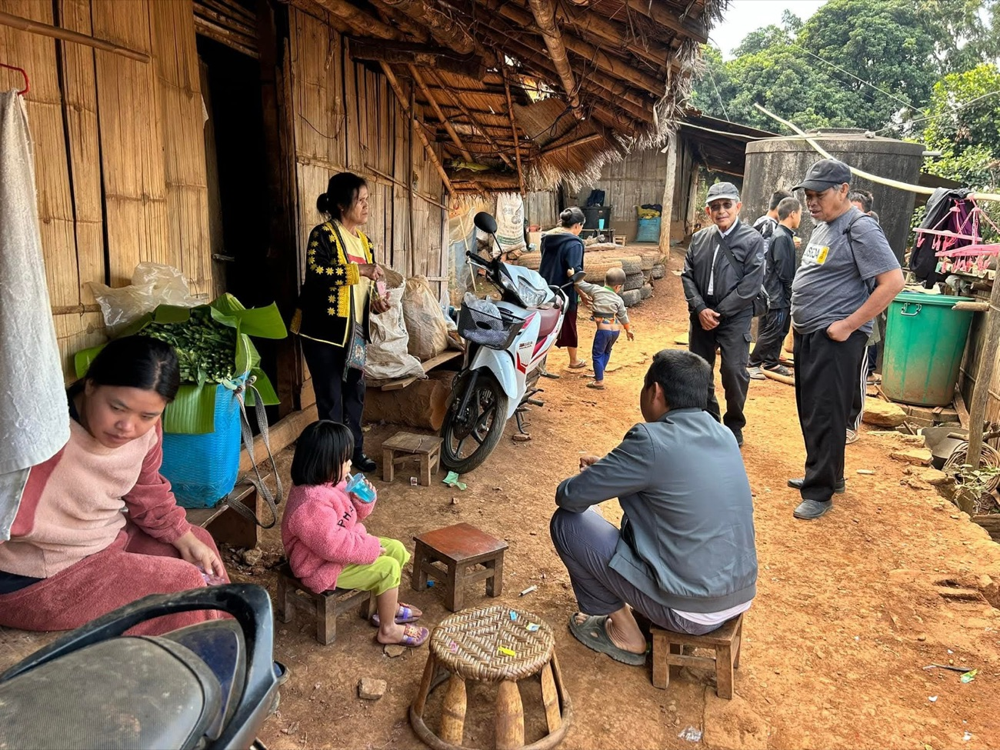

Bersama Membina
Generasi Muslim Masa Hadapan
Building future Muslim generations in Northern Thailand
Kami menjaga, mendidik dan membimbing anak-anak mualaf daripada komuniti 'Orang Bukit' di Phayao dan Chiang Rai, seawal usia 7 tahun.
- 150
- pelajar aktif, terutama di Utara Thailand
- 4
- Islamic Centre di Utara & Selatan Thailand
- 40
- pelajar peringkat menengah & universiti
- 30+
- tahun usaha dakwah di Phayao & Chiang Rai
Sehingga Mei 2026.
Tentang kami
Meneruskan amanah dakwah yang bermula lebih 30 tahun dahulu
Usaha ini dimulakan oleh Almarhum Ustaz Abdul Wahab Ahmad bersama para pendakwah tempatan di wilayah Phayao dan Chiang Rai. Pertubuhan Ar Rahmah Malaysia ditubuhkan untuk meneruskan perjuangan itu, dengan pendidikan yang tersusun untuk anak-anak mualaf supaya saudara baharu tidak kembali mundur.
Melahirkan generasi Muslim mualaf yang berilmu, berakhlak mulia dan mampu membina komuniti Islam yang kukuh serta berdikari dalam tempoh 20 tahun.

"Kami percaya bahawa setiap anak mualaf yang dibimbing hari ini mampu menjadi pemimpin, pendidik dan pembina ummah pada masa hadapan."Amir Hamzah bin Abdul HashimPengerusi
Model pembangunan
Perjalanan seorang anak, daripada belum mengenali Islam sehinggalah menjadi pembina ummah.
- Bukan Islam
- Mualaf
- Asrama dan penjagaan
- Pendidikan Islam
- Pendidikan akademik
- Muslim berilmu
- Pembina ummah
Tiga teras utama
Usaha yang kami lakukan setiap hari

01
Pendidikan dan penjagaan pelajar
Menggabungkan ilmu akademik dan pendidikan Islam bermula seawal usia 7 tahun.
- Asrama, makanan dan keperluan asas
- Pendidikan akademik dan pendidikan Islam
- Sokongan ke peringkat menengah dan universiti

02
Dakwah lapangan
Memperkenalkan Islam serta mengukuhkan kefahaman agama dalam kalangan komuniti pedalaman secara berhikmah dan penuh kasih sayang.
- Dakwah kepada masyarakat pedalaman
- Program pengislaman
- Kelas pengajian Islam dan ziarah komuniti

03
Kebajikan
Membantu memenuhi keperluan asas supaya mereka dapat memberikan tumpuan kepada pembelajaran dan ibadah.
- Sumbangan barang keperluan kepada orang kampung
- Membantu anak yatim dan golongan mualaf yang kurang berkemampuan
- Program korban tahunan sejak 2013
Islamic Centre
Empat pusat, satu misi
Tiga pusat di utara Thailand menjaga pelajar sekolah rendah, manakala pusat di Saiburi, Pattani membantu pelajar menyambung pengajian ke peringkat menengah dan universiti.
| Pusat | Pelajar |
|---|---|
| Jumlah Pelajar Aktif (Mei 2026) | 150 |
Ketelusan kewangan
Perbelanjaan tahunan
Merangkumi keperluan asas pelajar, makan minum, gaji kakitangan, utiliti, penyelenggaraan premis dan pengangkutan.
Lihat pecahan agihan dana dan muat turun laporan kewangan serta aktiviti setiap suku tahun.
Lebih lanjutJaminan ketelusan
Anda boleh semak sendiri
Laporan aktiviti
Setiap 3 bulan.
Laporan kewangan
Setiap 3 bulan.
Lawatan ke lapangan
Penyumbang boleh melawat pusat di Utara atau Selatan Thailand.
Taklimat berkala
Secara jemputan atau dalam talian.
Hubungi pihak berkaitan
AJK, penasihat atau badan seperti MAIPs dan ROS.
Ikuti di media sosial
Aktiviti terkini di Facebook dan TikTok.
Berita & aktiviti
Dari lapangan
Sumbangan
Anda menyumbang, kami laksanakan
Bukan semua orang mampu turun ke lapangan dakwah, namun setiap orang boleh menjadi asbab hidayah sampai kepada insan lain.
- Sumbangan terus Pindahan bank ke akaun Pertubuhan Ar Rahmah Malaysia.
-
Bayaran zakat melalui MAIPs Pelepasan Cukai 100%Ar Rahmah menerima sebahagian daripada jumlah tersebut. Pembayar layak mendapat pelepasan cukai 100%.
-
Bayaran zakat melalui PPZ MAIWP Pelepasan Cukai 100%Ar Rahmah menerima sebahagian daripada jumlah tersebut. Pembayar layak mendapat pelepasan cukai 100%.
Tertakluk kepada polisi dan kelulusan institusi zakat berkaitan.
Maybank · Pertubuhan Ar Rahmah Malaysia
5520 3110 4857
Fasa 2 (pilihan): bayaran FPX / kad terus di laman ini.
Untuk syarikat, yayasan & institusi
Sertai Majlis Penaung Ar Rahmah melalui program Penaung Dakwah, dengan laporan setiap suku tahun.
Lihat program Penaung Dakwah"Demi Allah, sekiranya Allah memberi hidayah kepada seorang sahaja melalui kamu, maka itu lebih baik bagimu daripada (memiliki) unta merah."
HR al-Bukhari